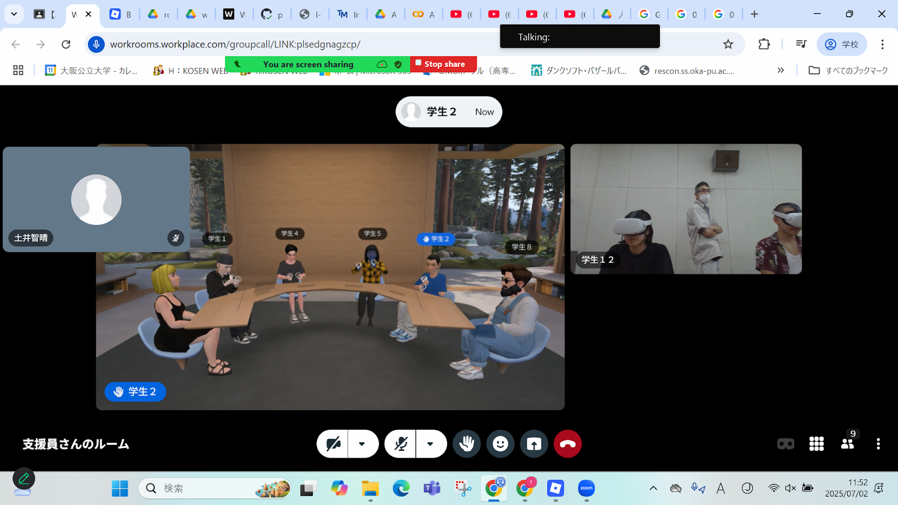

第2週目
2-1 2週目のレポートをHTMLで作る
1.内容
レポートをhtmlで作成する
2.感想
htmlは昔やったことがあってとても難しかった経験があるが、今では理解ができるようになり、わかりやすいと感じている。htmlは社会生活にもかかわると思うのでこれからもこの技術を身に着けていきたい。
2-2 機械学習体験
1.内容
画像をそれぞれ約１００枚ほど使い、AIに文字や画像を認識させ、それを実際に分類させた。
2.感想
AIに画像を認識させるのはイメージ的にすごく難しそうだと思ったけど、意外と簡単で楽しかった。
また、グー、チョキ、パーを認識させるにあたっては、グーとチョキの判別が難しく、AIがしっかり識別するにはまだ資料が足りないのかなと思った。
2-3 VR（バーチャルリアリティー：Virtual Reality）の体験

1.内容
ロブロックスやworkroomを使い、VR空間を散策したり、扱いを理解したりした。
2.感想
ロブロックスでは、VR空間であるという点に加え、オンライン上でみんなで遊ぶことができるという点のどちらも体験できるというところに最も興味をもった。
また、workroomでは、オンライン会議ができるという画期的なものなのでおそらくこれからも使える、また社会に出て使っていくものだなと思った。